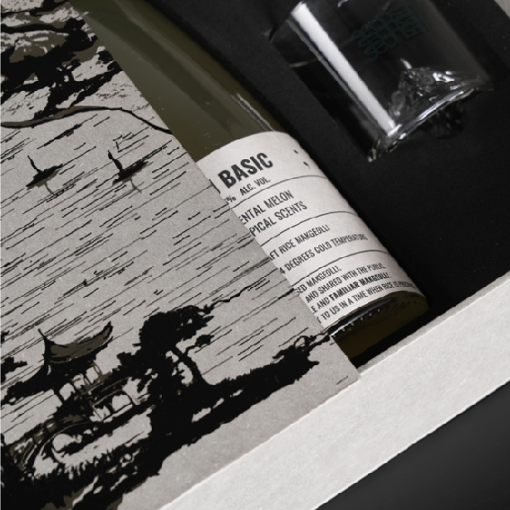
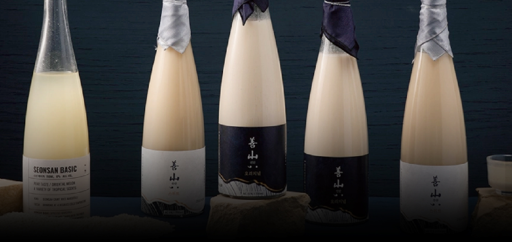

SEONSAN
SEONSAN is a brand that reinterprets forgotten traditions with a modern perspective, embracing the philosophy of Beopgo Changsin (法古創新)— honoring the old while creating the new—to build a sustainable business model.
-

From 1413 until 1995, SEONSAN was the administrative district covering what is now the Gumi area of Gyeongsangbuk-do, Korea.The name SEONSAN has been used since the reign of King Taejong of the Joseon Dynasty. It was known as a peaceful place, free from banditry and blessed with warm, welcoming community. As the birthplace of Seonsan Yakju and many distinguished scholars, including Kim Jong-jik, it earned the reputation as the cradle of Yeongnam's great figures.
-

Seonsan OriginalSeonsan Original is a Samyangju crafted with a bright, yogurt-like acidity, delivering a refreshing and well-balanced flavor profile.